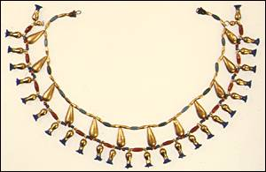
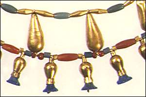

|
After many weeks, the jeweller shows you what he made. He used the carnelian, red jasper and gold that you brought, as well as some beads of glazed composition and green glass, to make a necklace.

This necklace is from the 18th dynasty (1550 B.C. to 1295 B.C.). Wealthy people in ancient Egypt would have worn necklaces like this on special occasions.

Many pieces of jewellery from ancient Egypt have beads or decorations in the shape of plants or animals. On this necklace, the tiny pendants that hang from the lower string of the necklace are shaped like cornflowers.
|